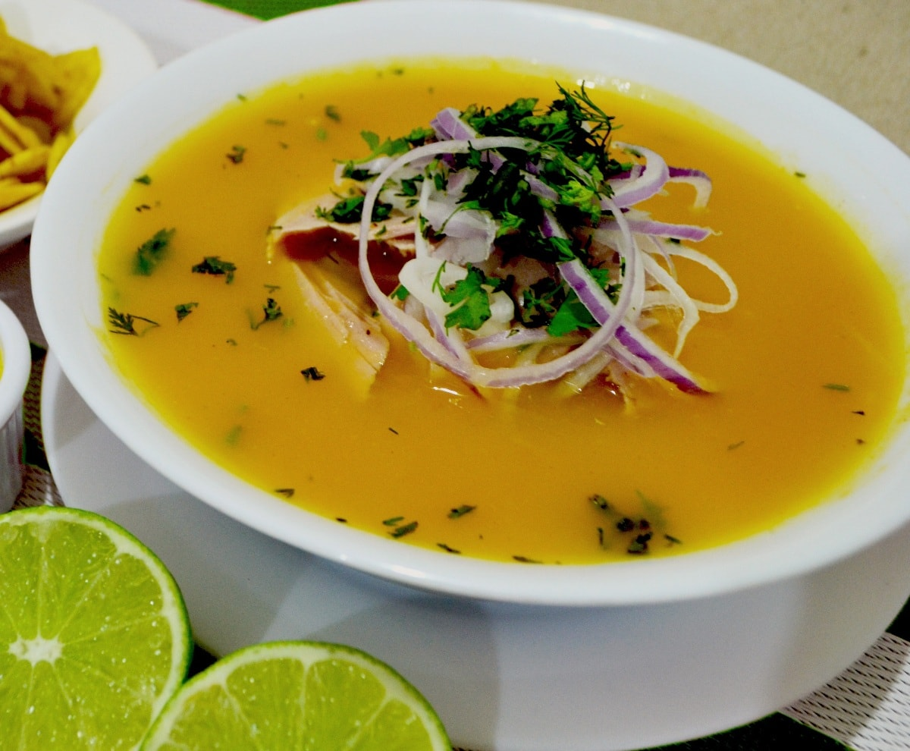

Encebollado

Description
Encebollado is a soup topped with thin onion slices pickled in lemon juice. It's claimed that the soup cures a hangover. The fish version is very popular in the coastal region of Ecuador. Don't worry about the little heat in the soup. It finds a perfect balance with the other ingredients once you stuck up your plate. If you are lucky to find cassava aka yuca roots in your grocery store, we recommend to give it a try. Cut off the firm skin. Then cook it the same way as potatoes.
Ingredients
- 1 lb tuna steak or fillet
- 1 lb potatoes
- 2 medium tomato/es
- 2 medium tomato/es thinly sliced
- 2 medium onions
- 2 medium red onions thinly sliced
- 6 cloves garlic
- 6 limes or lemons for juice
- 1 bunch cilantro chopped
- olive oil
- salt & pepper
Optional Sides
- plantain chips, tortilla chips, bread, and/or rice
- avocado slices as a topping
Steps
- Salad
- In a BOWL, mix red onions, sliced tomatoes, half of the cilantro, and 1 tbsp oil.
- Season to taste with lemon juice and salt & pepper.
- Let it marinate for 1 hour.
- Soup
- In POT #1, bring 2 quarts of water to a boil.
- Add quartered tomatoes and onions, half of the cilantro, garlic, the fish, Encebollado spices, and salt & pepper to taste.
- Cook over medium heat for 20 minutes.
- Scoop vegetables out and blend them in a FOOD PROCESSOR with 1 cup of the soup.
- Strain the liquid and add it to the POT.
- Fish
- Transfer the fish to a PLATE.
- When cooled, break it into small pieces. Set aside.
- Potatoes
- In POT #2, cook potatoes in water with salt to taste until tender.
- Drain.
- In a FOOD PROCESSOR, blend 1 cup of potatoes with 1 cup of the soup.
- Pour this liquid into POT #1. Mix well.
- Serve
- Serve separately and assemble your plate in piling up the following layers: potatoes, fish, soup, salad.
- Enjoy!